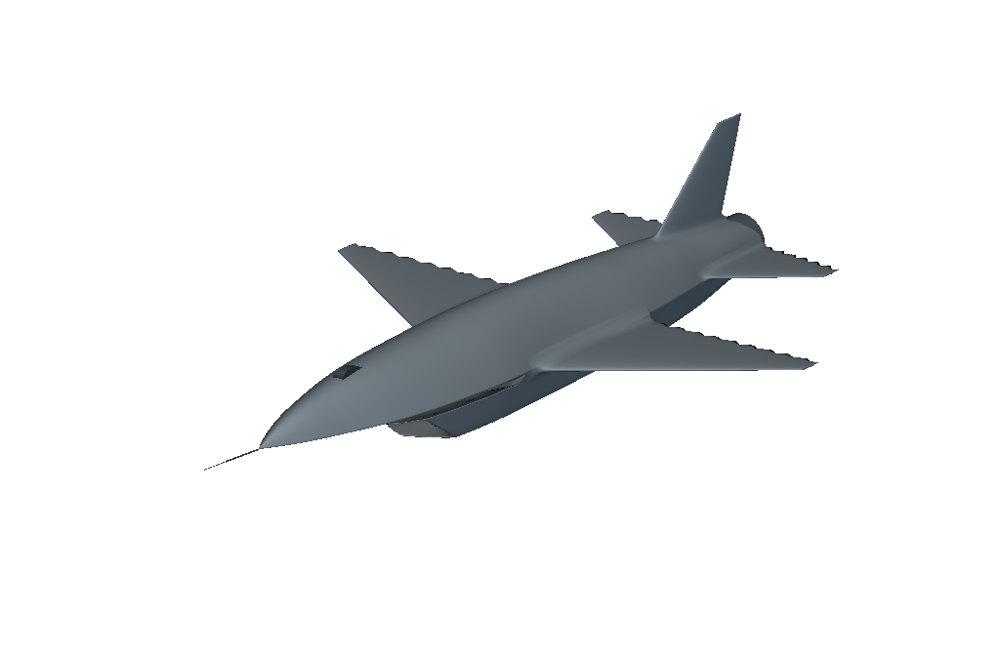
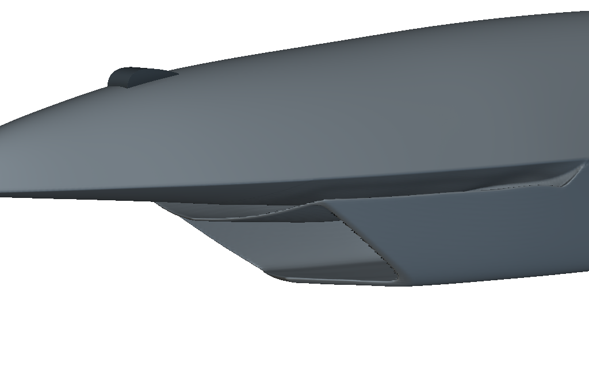
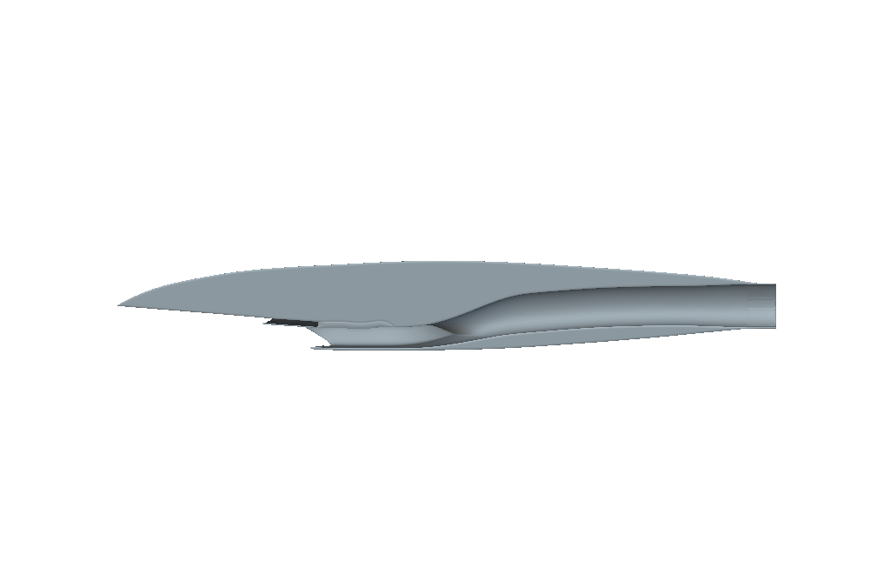
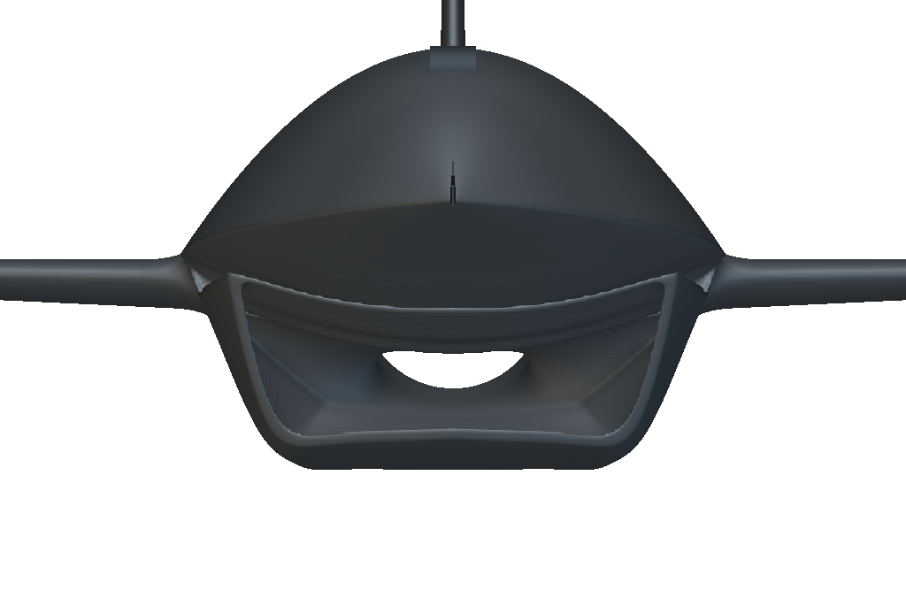
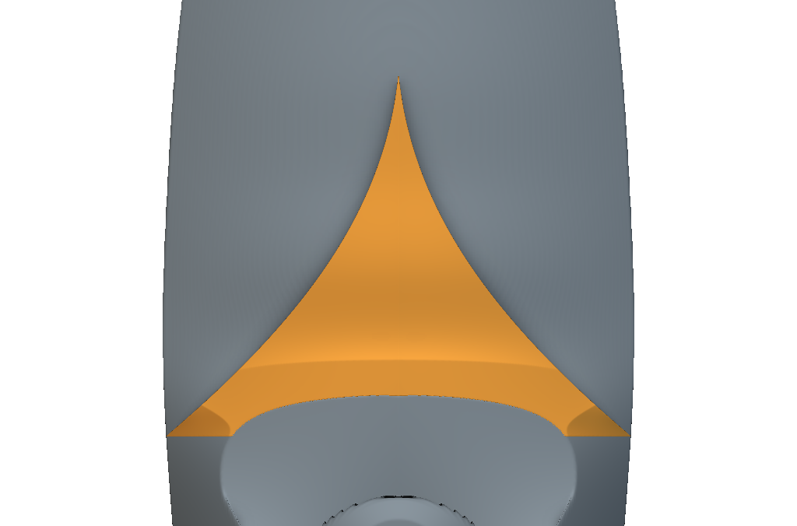
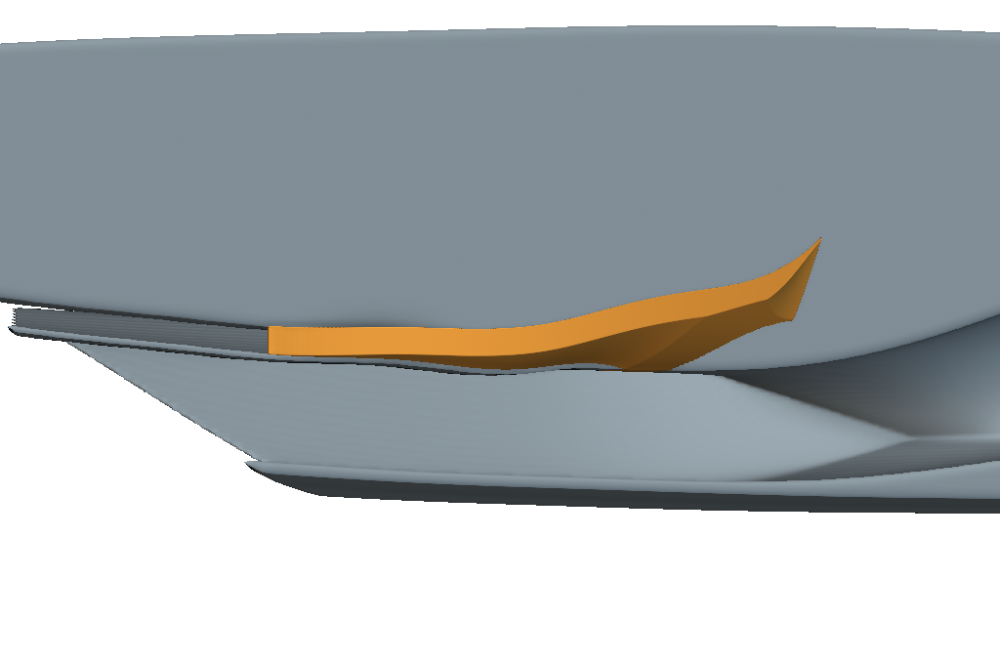
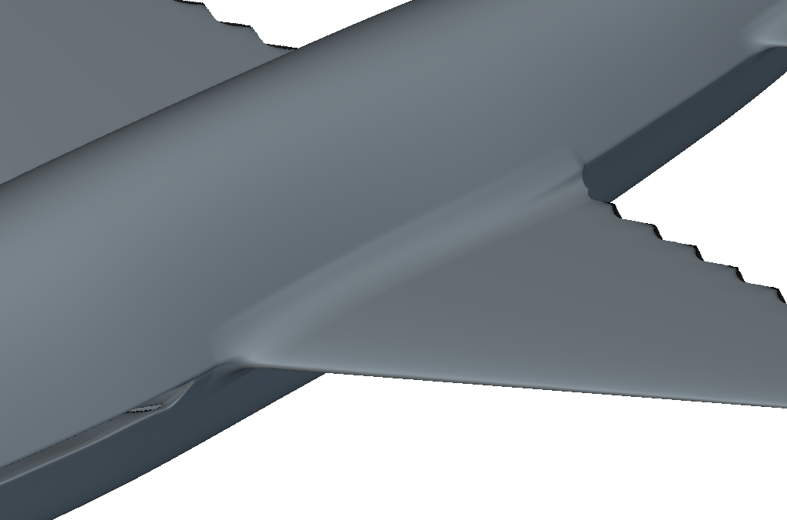
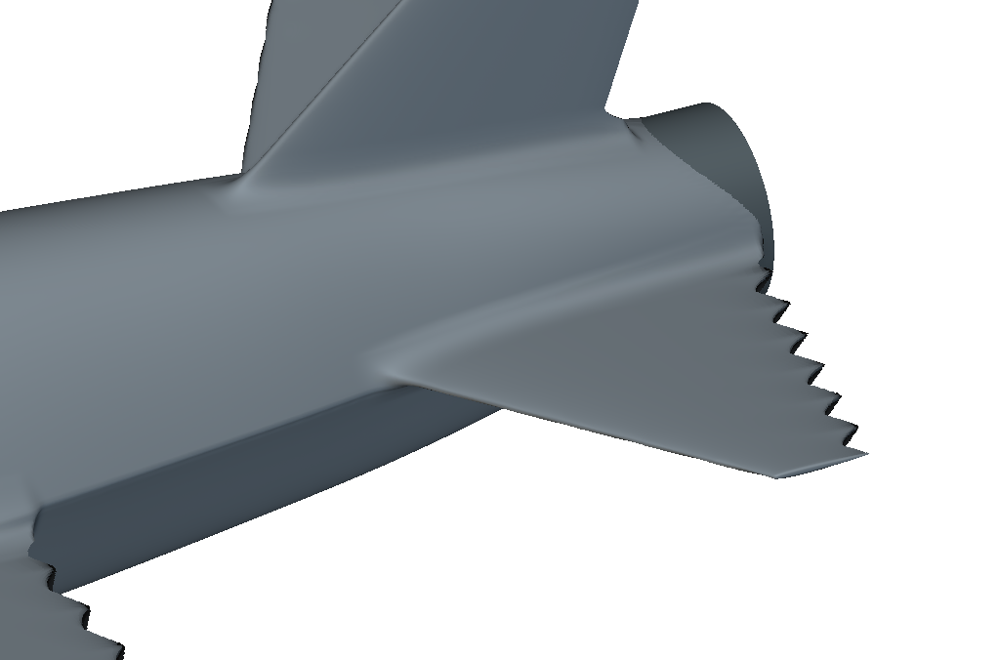
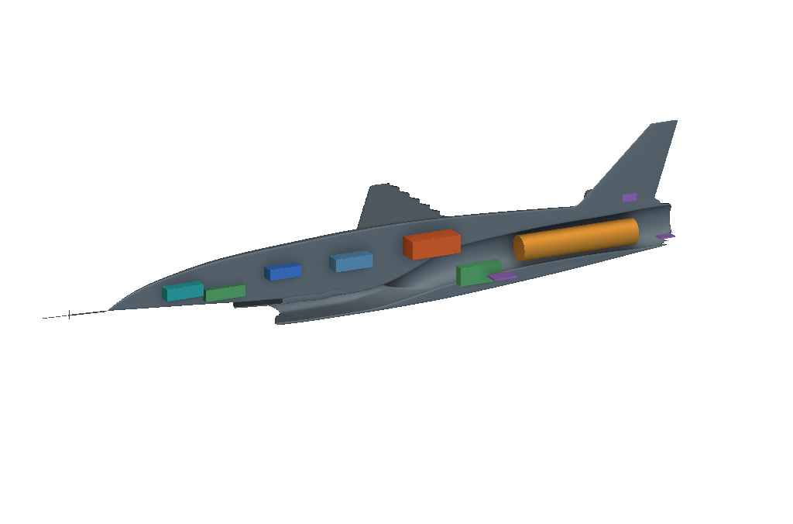
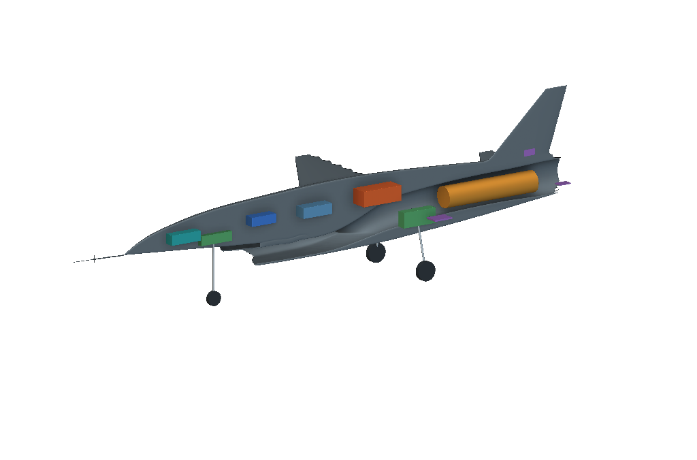

Fury RC: native surfaces
Guide splines, conic lofts, inlet continuity, and editable concept allocations. A non-combat appearance study, not production aircraft data.
Recorded geometry and lessons from the source work. Public-package checks run offline. No new native evaluation is claimed.
01
A native editable exterior
The graph builds the exterior from native conic and implicit-spline fields. Numerical guide arrays are included; source photographs and source meshes are omitted. Dimensions and placements are demonstration choices.

02
Keep the inlet and cavity continuous
Use one signed-span lower conic to avoid a flat center and steep shoulder joins. Make the lip, roof, and cheeks one shell. Subtract the main cavity after additive blends. A centerline probe cannot establish a lateral passage.



03
Separate splitter material from passage checks
The pointed splitter attaches to the forebody while lateral passages remain distinct. Sample across the span and at the cheek returns. Finite probes do not certify minimum clearance or installed flow.


04
Local root blends
Compact C2 field blends preserve surfaces away from the wing, tail, and fin roots. A smoothing control is a field parameter, not a measured fillet radius. The native Ramp uses scalar field, input limits, output limits, and continuity.


05
Editable allocation envelopes
Internal bodies allocate avionics, energy storage, actuators, and landing gear. No hardware fit, wall thickness, mass, center of gravity, propulsion performance, or flight readiness is established by these shapes.


06
Rebuild and verify
Build the complete recipe from scripts/build_rc_native.py through the root build command. Inspect the dependency closure, import into an empty scratch notebook, and compare evaluated scalar checks and final geometry. Keep fitted-image agreement separate from independent validation.